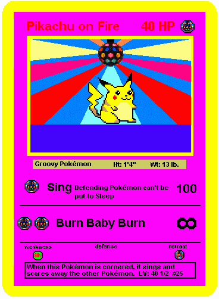

Pikachu on Fire
Last Updated 3/11/00
This and its fellow new card, Hundredtales, have a new type. Pikachu on Fire's type is Disco-Type Pokémon. Instead of the normal Pikachu's "Mouse Pokémon" status, the new Pikachu on Fire has is a "Groovy Pokémon." It's height and weight are the same, but its attacks are totally different. The Sing attack causes major damage; only enormously strong Pokémon like Charizard and Vileplume can withstand such an attack. On the bright side, the Pokémon affected can never be put to sleep anymore as long as it's in play. An even more revolutionary attack is the Burn Baby Burn attack; it automatically Knocks Out the defending Pokémon. Apparently the new Pikachu kept its old form's number, but the discription's totally changed. It now reads "When this Pokémon is cornered, it sings and scares away the other Pokémon." It's attacks and retreat use Disco-Type energy, a form of energy not yet created. Wizards of the Coast is planning to release a Rainbow-Type energy card which lets a Pokémon have one energy of any type in exchange for losing 10 HP. A Ditto could also use the attacks. This and the Hundredtales cards are the only cards by Wizards of the Coast to use any type of energy besides Colorless. The Weakness is another new type; no one has decided what it is, thought many experts believe it is supposed to be a "Nineties"-Type energy, but no one knows for sure. Only time will tell.

Related Links:
Hundredtales
Bob the Hobo's Pokémon Section